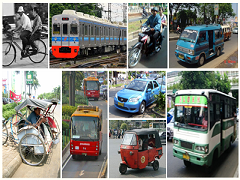

Sistem transportasi darat Kota Pontianak dilayani oleh minibus angkutan kota yang biasa disebut oplet, taksi, dan beberapa rute dilayani oleh bus kota. Sebagian besar rute dalam kota dilayani oleh oplet yang menghubungkan beberapa terminal. Untuk keberangkatan jalan darat ke luar kota dilayani di Terminal Batulayang. Melalui jalan darat pula dilayani bus antar negara, yakni ke Kuching dan ke Brunei. Bus ini disediakan oleh berbagai penyedia layanan, termasuk DAMRI. Transportasi darat ke Malaysia menjadi mungkin melalui Jalan Lintas Kalimantan. Layanan imigrasi Indonesia-Malaysia dilaksanakan di Entikong, Kabupaten Sanggau.
